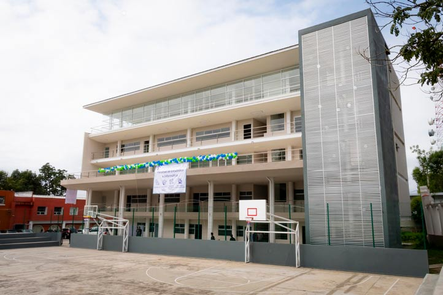
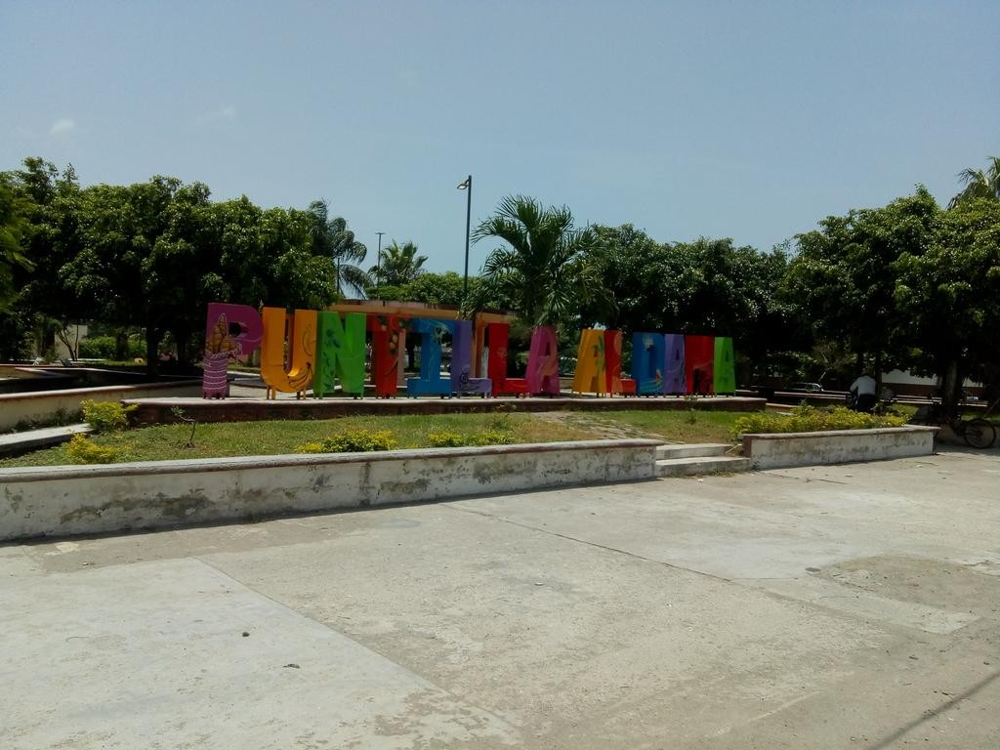
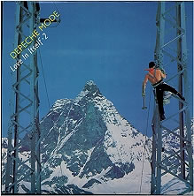

Sobre la Autora
La persona detrás de Clonspotify


Soy Sara Ortega Hernández, estudiante de la Ingeniería en Sistemas y Tecnologías de la Información en la Facultad de Estadística e Informática de la Universidad Veracruzana. Soy foránea aquí en Xalapa, mi pueblo de origen es Puntilla Aldama, Veracruz y tengo 23 años (casi 24, el 13 de junio es mi cumpleaños).
 Canción favorita del momento
Canción favorita del momento

✦ Datos curiosos
Sobre este proyecto
Clonspotify es el proyecto final de la Experiencia Educativa Fundamentos de Tecnologías Web, desarrollado durante el periodo 2026 (madrugada del 08 de Junio). Es una biblioteca musical personal construida con HTML, CSS y JavaScript, que utiliza XML como fuente de datos con validación DTD. El proyecto incluye 7 páginas funcionales: login, inicio, catálogo, favoritas, playlists, estadísticas y agregar canción.